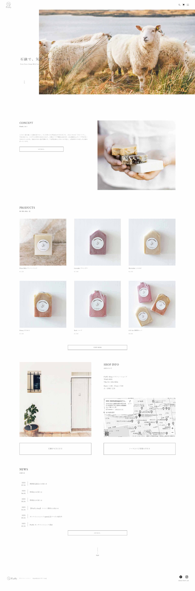

FluffyWeb Site (Responsive)
Web Design & Create
- View Size対応サイズ
- レスポンシブ
- Create Days実装期間
- 3日間/5ヶ月目制作
- Used Technology使用技術
- JavaScript
Conceptコンセプト
自身で初めてコンセプトから設計したデザインを使用し、メディアクエリに対応させて制作しました。
お値段よりも体に優しいものを選びたい女性をターゲットに、羊のミルクを使った石鹸を作っているお店のECサイトという設定です。
お店の名前「Fluffy（フラフィー）」は英語で「ふわふわ・もこもこしたもの」を意味する単語で、羊と石鹸の泡両方の「ふわふわしたイメージ」から命名し、それに合わせロゴも制作しました。また、「清潔感・高級感」を意識して全体的に余白が多いデザインにしています。
Impression制作を通して感じたこと
JavaScriptを使用してスクロールに応じたアニメーションや、delayの調整を行いました。また、商品画像を押すとモーダルで対応する商品の拡大画像が表示されるように工夫をしています。
コーディング面では初めてSASSのmixin機能を使用し、よく使うデザインの組み合わせを考えて登録して使う方法を勉強できました。便利さを感じた反面初めてSASSを導入した時と同じく、後から見たときにわかりにくくならないように注意しております。レスポンシブ対応は切り替えのポイントでもデザインのくずれがないように、どのように配置するかを自分なりに考えて、確認をしつつ制作していく練習となりました。
Fonts & Colors
落ち着きのある細いセリフ体と明朝体を使用し、「女性目線の丁寧な暮らし・高級感」を意識しました。また、石鹸の清潔感と羊のイメージから、文字と写真以外は全て白を使用しています。
